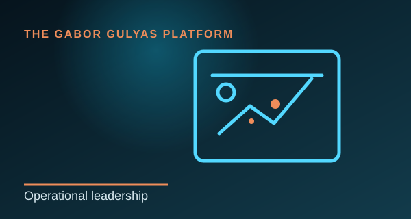
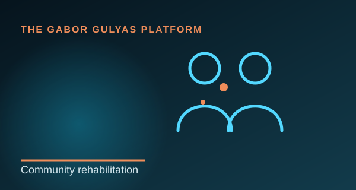

Operáció
Operatív vezetés
Tervezés, compliance és megvalósítás összetett környezetben.
Tovább →Embereket, folyamatokat, adatokat és partnerkapcsolatokat kapcsolok össze megbízható eredményekért.
Operáció, közszolgálat, vállalkozás, technológia és vezetés — gyakorlati szervezeti tudássá alakítva.

Minden rész külön célt, tartalmat és saját vizuális identitást kap.

Tervezés, compliance és megvalósítás összetett környezetben.
Tovább →Embereket, folyamatokat, adatokat és partnerkapcsolatokat kapcsolok össze megbízható eredményekért.

Struktúra, felelősség és második esélyek támogatása.
Tovább →A munka az operatív kontrollt társadalmi céllal és rehabilitációval kapcsolja össze.

Gyakorlati üzleti felelősség saját vállalkozás építéséből.
Tovább →A vállalkozásvezetés megtanított a stratégia, napi szolgáltatás, költség és kockázat összekötésére.

Web, branding, infrastruktúra és az AI gyakorlati használata.
Tovább →Projektjeim technikai megértést kapcsolnak össze üzleti igényekkel és hozzáférhető designnal.

Vezetés, stratégia, kommunikáció, problémamegoldás és technológia.
Tovább →A legerősebb érték a különböző területek kombinációjából születik.

Szervezetek támogatása AI és változás körüli képességek építésében.
Tovább →A jövőbeli irány bizonyítékalapú, gyakorlati szervezeti tanácsadás.